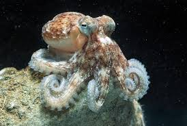

المخلوقات البحرية
مخلوقات أعماق البحار: كائنات غريبة تتحدى الظروف القاسية
تعيش مخلوقات أعماق البحار في بيئات مظلمة وباردة تحت ضغط مرتفع للغاية، مما يجعلها تطور خصائص فريدة للبقاء. من بين هذه الكائنات:
ويكيبيديا، الموسوعة الحرة
سمكة الصياد (Anglerfish): تتميز بوجود زائدة مضيئة تجذب بها فرائسها في الظلام الدامس.
السمكة المنتفخة (Blobfish): تُعرف بمظهرها الغريب وتعيش في أعماق تصل إلى 1200 متر.
هذه الكائنات طورت تكيفات مذهلة للبقاء في بيئات تفتقر إلى الضوء والأكسجين، وتحت ضغط هائل.

الأخطبوط: سيد التمويه والذكاء في المحيطات
يُعتبر الأخطبوط من أذكى الكائنات البحرية، ويتميز بقدرات فريدة:
التمويه: يستطيع تغيير لونه وملمس جلده ليتناسب مع البيئة المحيطة، مما يساعده على الاختباء من المفترسين.
الذكاء: يُظهر سلوكيات معقدة مثل استخدام الأدوات وحل المشكلات.
الدفاع: عند التهديد، يطلق سحابة من الحبر لتشتيت المفترسين والهرب.

بقرة البحر (خروف البحر): العملاق اللطيف في المياه الساحلية
بقرة البحر، أو خروف البحر، هي من الثدييات البحرية الكبيرة التي تعيش في المياه الضحلة الدافئة:
الصفات: تتميز بجسم ضخم وزعانف أمامية تساعدها على السباحة ببطء.
موضوع
النظام الغذائي: تتغذى على النباتات البحرية، مما يجعلها تلعب دورًا مهمًا في النظام البيئي البحري.
السلوك: معروفة بطبيعتها الهادئة والودودة تجاه البشر.